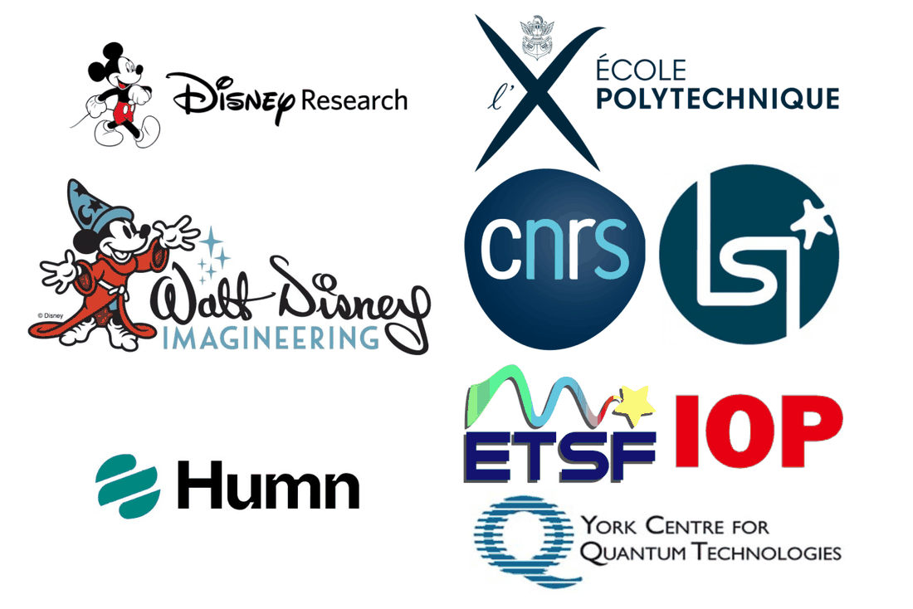

Dr. Jack Wetherell
Research and Development Scientist
I am a research and development scientist in the fields of imagineering, autonomous vehicles, and quantum technologies, specializing in machine learning, computer vision, simulation, robotics, data science, embedded systems and electronics.
I currently work as a Lead R&D Imagineer with Disney Research at Walt Disney Imagineering in Los Angeles, where I work on various projects to invent, research and develop technologies for Disney’s theme parks.
I am also the lead developer of the iDEA code, which is an a free software framework in python for experiments, testing and education in many-body quantum physics with a focus on reputability, interactivity and simplicity.
I am an associate member of the Institute of Physics (IOP), a member of the European Theoretical Spectroscopy Facility (ETSF) and the York Centre for Quantum Technologies (YCQT).

Contact information
- Address
- Los Angeles, USA
- jack.wetherell@gmail.com
- Google Scholar
- Publications profile
- jack-wetherell